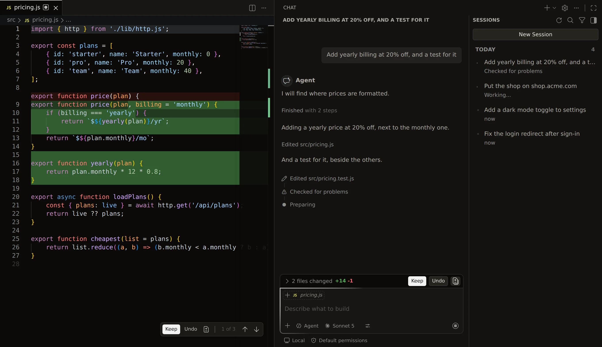

Learn about CloudeIDE
Your coding agent, built on VS Code. It plans, works across your codebase, checks its own work, and nothing lands until you keep it.
The agent
Open a folder, open Chat, and say what you want. The agent works on your real project, in your editor.
- Plans first. For bigger jobs it asks what it needs to know, then keeps a plan you can see and ticks it off step by step.
- Reads first. It lists the project, searches it, finds symbols and their uses, and reads the files that matter before it changes anything.
- Edits across files. Changes are made in the editor, marked line by line, in as many files as the job needs.
- Checks its work. It asks the editor for errors after editing, runs your tests in the terminal, and fixes what fails before it hands anything back.
- Understands pictures. Attach a screenshot and it sees it. Attach files, folders or a selection with #.
- Agent and Ask. Agent mode changes code. Ask mode only reads and answers.
- Sessions. Every conversation is kept in the sessions list, with what it changed.
- Your tools. MCP servers you add in VS Code are offered to the agent. Switch off any tool you don't want it to use.

Review with Keep and Undo
Nothing the agent writes stays until you say so.
- Every change shows in place in the editor: new lines green, removed lines red.
- Keep or Undo each change, each file, or everything at once.
- Checkpoints let you go back to how things were before any request.
Tab
Grey suggestions as you type, that follow your team's rules. Press Tab to accept. Finish a function and it offers to write the test for it.
Pull requests
Type /pr in Chat. Unsaved files are saved, and a branch, a commit and a pull request are made for you. You confirm before anything is pushed.
Team rules
- An admin writes the rules once, for the whole organisation. Every agent and every suggestion follows them.
- A project can add its own in
AGENTS.mdat the root of the folder.
Deploys
Ask the agent to ship it, or press Deploy in the Cloud tab.
- Preview first. The agent deploys a preview, checks it, and only then asks to go to production.
- Reads the log. If a deploy fails, the agent reads the build log, fixes the cause and tries again, up to three times, then stops and tells you.
- Rollback and cancel. Go back to any earlier deployment, or stop one that is still building.
- One record. Whether you deploy or the agent does, both see it: the Cloud tab updates, and the agent knows on its next turn.
Cloud
A tab beside the chat, for the project you have open.
- Deployments for development, preview and production, with their logs.
- Custom domains. Add yours, copy the DNS record, check it, and choose the primary one.
- Environment variables per environment, with secret values hidden.
- Analytics for each environment.
Agent permissions
You decide what the agent may do in Cloud on its own. Choose a preset from the Agent button in the Cloud tab.
- Secrets stay secret. When a variable needs a value, you type it into a password box. The agent only ever sees the name.
- A limit per hour. The agent can start at most 10 deploys an hour. You can change the number in Settings.
CLI and MCP
Deploy from your terminal, or let Claude Code, Cursor and Codex deploy with CloudeIDE over MCP.
npm install -g cloudeidecloudeide deploy --env production
cloudeide install claude-codeBuilt on VS Code
Your extensions, keybindings and themes work as they do in VS Code. The agent works on the folder you opened; what it reads is sent to the model to answer you, as described in the Data Use Policy.